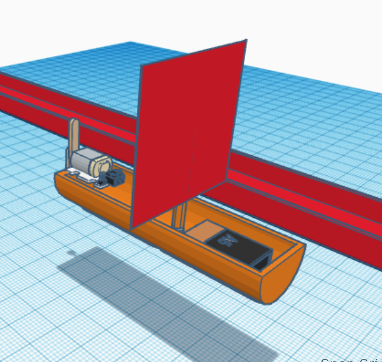

1/19/24 - This week we were taught chemical engineering as well as being introduced to our semester 2 project. Our semester 2 project will be a 6-8 project where I will make an arduino car with my partner Jaiden. For chemical engineering, we just learned about different jobs that fall under the category of chemical engineering, subjects related to chemical engineering like metallurgy or microfluidics, and the moral implications of working in chemical engineering like oil exploration. This weekend I am going to finish homework and study + code.


1/26/24 - This week we started working on our semester engineering project where my partner deicded we would make an arduino car. My partner is an extremely skilled individual possessing an innate talent for CADing so I hold a lot of faith in our design for the car. I think we are progressing along well as I have almost finished the circuit cad of our arduino while my partner seems to almost be done as well. Next week I plan on finishing the circuit CAD and beginning prototyping our car. I am very excted to see how our prototype and final reflect our cad.


2/5/24 - This week I continued working on the arduino car. My partner began cutting cardboard for the car, setting up the base and aesthetics of the car. I finished CADing my circuit as well as (theoretically) finishing the physical circuit for the arduino. Furthermore, I learned to solder wires for my wheel motors. This week my goal is to finish soldering and fully make sure my circuit for the motors work. By Friday, the wheel motors should fully be completed and I'm hoping to begin the secondary function of our car. This weekend I went shopping with friends and I bought a pair of Doc Martens! FORGOT TO TAKE PICS THIS WEEK :(
2/13/24 - This week I finished up the driving parts of the car by adding it into the car chasse and rewiring it back in. We had a setback in that the soldered wires broke off and we had to set the motors and breadboard and arduino down. I'm going to now add the non-motor wheels which we made by hot gluing 2 cd discs ono cardboard and a skewer. onto the car and further secure all parts down before I work on the secondary function of the car. My partner will likely now work on the chasse even further.


2/26/24 - Our car was cube shaped with 2 motor wheels on the front and 2 back wheels made of CDs. It was powered by Arduino and a 9V battery and it performed quite well but less than we had hoped for. We only tested once and that was on the day of performance and it traveled indefinitely. We did, however, have a couple prototypes with the only differences being dimensions and freedom of motion for the wheels. Obviously, the second car did better than the first since our wheel actually turned. I think if we had time we would add a sensor that would cause the car to stop when detecting another object.


3/4/24 - The project we are currently working on is an egg drop test. We are using a trash bag, cardboard, string, balloons, 3 ft of tape, and cotton balls. We have decided to add balloons at the bottom of a 1 ft by 1ft square of carboard where we will attatch the egg surrounded with cotton balls as well as a parachute made of a trash bag held with string. We believe this lightweight design will keep the parachute to slow the descent and the balloons can act as a cushion. We also added cotton balls for further security. I am scared that the design may be a bit too heavy and the parachute wont have enough time to deploy.

3/13/24 - Our egg drop ended poorly as it cracked but the testing went awry in a multitude of ways. Firstly, there was no wind when our previous tests were most successful with wind and during the fall, the parachute got cuaght on the pillar, catching the parachute. Overral I still firmly believe the egg would remain unharmed if it did not get caught. For spring break I plan on working on some projects as well as touring school. I am also planning on hanging out with some friends over break.


3/29/31 - The new project we started was a boat that could move on a 500 cm canal while only being allowed 2 blows on the boat and the rest of propulsion from a motor. Me and my partner, Justin Wong, are planning on making a ship modeled after real life speed boats and propelling it using a simple sail and motor. We are expecting it to be able to successfully float as well as traverse the canal successfully. My favorite part of spring break was going out with my friends Art and Alex, Dylan Thomas and Chris Clem, and Noya, Jacob, Ella, Soren and Melanie as well as going to tacos el gordo. I'm looking to lock the freak in for comp sci and make a hella dope project, go ape sh*t on studying for AP exams, kindly encourage and nurture my gpa, and do my drivers ed.



4/5/24 - The project we worked on was a boat powered in any way to move as far as possible down a 500 cm gutter. Me and my partner initially decided to use a motor-sail combo but we decided to leave out the sail because the motor we believed to be absurdly powerful. However, in practice, our boat ended up being slightly too wide so we never travelled very far. We could have cut off the popsicle stick ends that we werent utilizing and we could have also added the sail as a precautionary measure. We also could have just added safety and waterproof measures if we had more time. My favorite parts of this class are of course the people from Justin Wong to Mr. Poole himself. Mr. Poole keeps this class very welcoming and maintains a tasteful balance of education and entertainment which keeps me WANTING to come back to this class every day. I am so very blessed to have a reliable, everpresent anchor in my life who is always so willing to educate, give advice to, and laugh with. Some topics such as computer and electrical engineering were very very fun as well, helping inspire me to pursue computer engineering. My least favorite part of this class was not a problem with the class itself, just that there weren't too many people my age to talk to so I mainly kept to myself and couple friends. This weekend I am going to get a haircut from a friend of mine and volunteer at the GUSD robotics tournament with some friends volunteering as well. After I am going to lock myself in my room or go to Starbucks and grind out AP exam studying and project coding.


4/15/24 - We started our final project which is a cardboard boat that will carry 2 people across a pool forward and back. I'm excited for the development of our project because I think this concept of a fully cardboard boat leaves a lot of room for creative, practical input that might improve our design. Last week our challenge was to make a post-it note bridge out of 20 post its. We made ours around 14 feet but the longest was around 19. For the end of the yeat, I'm generally looking forward to the freedom that comes near the end. I am currently swamped with AP exams whcih is honetly giving me a lot of stress so once that ends, I am looking forward to just relaxing with friends and working on personal projects as well as myself as an individual.
4/26/24 - We made a lot of progress in these 2 weeks. We firstly finished making the base floor me and Wong will sit in. We also made the walls of the boat and started on the very bottom of our boat, which will serve as the main force of buoyancy. Thus we need to spend a lot of time making sure no water will leak into this section of our boat as well as making sure it is structurally integral. Some problems I foresee our boat having is the bottom section of our boat filling up with water, causing the boat to sink. I do not have a lot to be excited about in the upcoming weeks except for the end of my AP Exams which means I will be able to have fun and also sleep. It has been rough but I am getting through with the small victories in life. I am a spirtual being living a human experience. As a man, and especially a Korean man where stoicism is practiced heavily especially in older geneerations, I think I've been placed into a steretype thats difficult for me to find a place in. This is because I am very emotional which I believe is in many ways a positive trait regarding me, especially my own individual growth. However, I also understand that this is a more feminine trait so sometimes people around me think or say that I'm gay or whatever but I just learned to cut out that noise because there are many more people that I have been able to have a positive impact on because of this trait of mine. And I dont really care much for what those kind of people say.
5/6/24 - We made further progress on what we've been working on prior. We added the hull at the bottom but also added foundation beams at the bottom after realizing the floor was caving. We're also going to add another thick layer of carboard, likely double ply, to the base foor we're going to sit on since we ar worried it may still cave in. We're going to work on firstly finishing up the hull and the second floor layer. After that I am going to work on makin the paddles for the boat and we should be done other than adding more tape to critical points. I am concerned about us possibly breaking the boat by sititng in it and also us running out of tape. Apple juice is clearly the correct option. If you choose orange juice it can be assumed that you are worthless, less than nothing. You can not even fathom the good things in life because it is something you cant and never will deserve. Enjoy your filthy, pathetic, sour, pulpous witch's brew in the deepest depths of hell. Hell, where you rightfully belong. For those who can appreciate the nuanced, layered flavors that are thoroughly integrated in apple juice, i wish you only well in life. I don't think the complexities and indescribable magic of apple jucie can be scribed into the english language. So only those who are rightfully desrving of blessings can truly understand this message. godspeed.